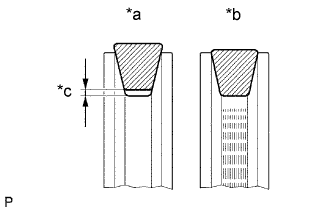
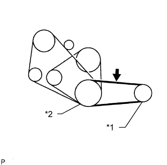
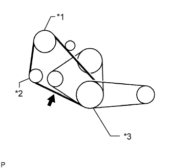
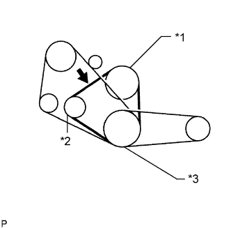

ПРИВОДНОЙ РЕМЕНЬ > ПРОВЕРКА БЕЗ СНЯТИЯ С АВТОМОБИЛЯ |
| 1. INSPECT V BELT |
|  |
Visually check the belt for cracks, oiliness or wear. Check that the belt does not touch the bottom of the pulley groove.
| *a | CORRECT |
| *b | INCORRECT |
| *c | Clearance |
|  |
Check the vane pump V belt deflection by pressing on the belt at the point indicated in the illustration with 98 N (10 kgf, 22 lbf) of force.
| Item | Specified Condition |
| New belt | 8 to 10 mm (0.314 to 0.393 in.) |
| Used belt | 10 to 15 mm (0.393 to 0.590 in.) |
| *1 | Vane Pump Pulley |
| *2 | Crankshaft Pulley |
 | Measuring Point for Belt Tension |
Reference:
Using a belt tension gauge, check the cooler compressor V belt tension.
| Item | Specified Condition |
| New belt | 441 to 539 N (45 to 55 kgf, 99.1 to 121.2 lbf) |
| Used belt | 196 to 343 N (20 to 35 kgf, 44.1 to 77.1 lbf) |
|  |
Check the cooler compressor V belt deflection by pressing on the belt at the point indicated in the illustration with 98 N (10 kgf, 22 lbf) of force.
| Item | Specified Condition |
| New belt | 11 to 15 mm (0.433 to 0.590 in.) |
| Used belt | 15 to 20 mm (0.590 to 0.787 in.) |
| *1 | Cooler Compressor |
| *2 | Idle Pulley |
| *3 | Crankshaft Pulley |
| Measuring Point for Belt Tension |
Reference:
Using a belt tension gauge, check the cooler compressor V belt tension.
| Item | Specified Condition |
| New belt | 372 to 608 N (38 to 62 kgf, 83.6 to 136.7 lbf) |
| Used belt | 196 to 392 N (20 to 40 kgf, 44.1 to 88.1 lbf) |
|  |
Check the fan and generator V belt deflection by pressing on the belt at the point indicated in the illustration with 98 N (10 kgf, 22 lbf) of force.
| Item | Specified Condition |
| New belt | 7.0 to 10 mm (0.276 to 0.393 in.) |
| Used belt | 10 to 14 mm (0.393 to 0.551 in.) |
| *1 | Water Pump Pulley |
| *2 | Generator |
| *3 | Crankshaft Pulley |
| Measuring Point for Belt Tension |
Reference:
Using a belt tension gauge, check the fan and generator V belt tension.
| Item | Specified Condition |
| New belt | 441 to 539 N (45 to 55 kgf, 99.1 to 121.2 lbf) |
| Used belt | 196 to 343 N (20 to 35 kgf, 44.1 to 77.1 lbf) |